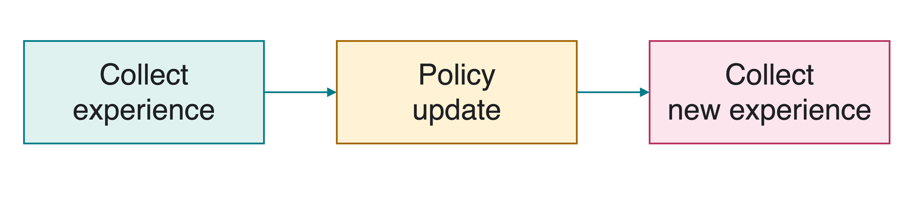
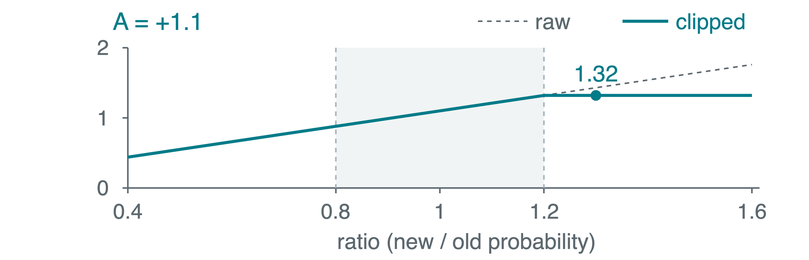
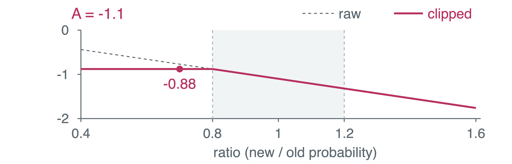
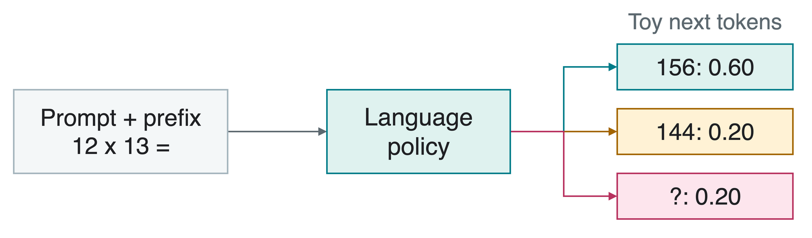
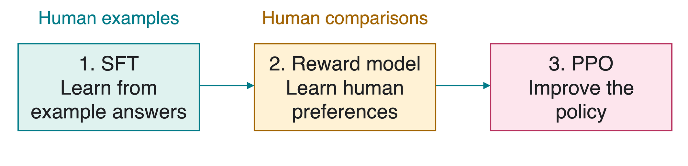
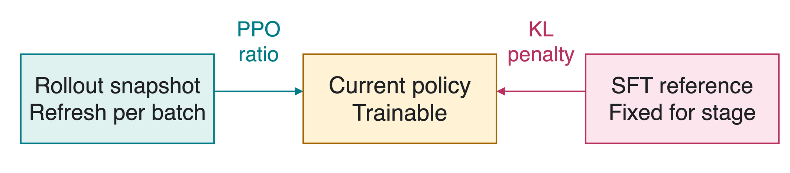
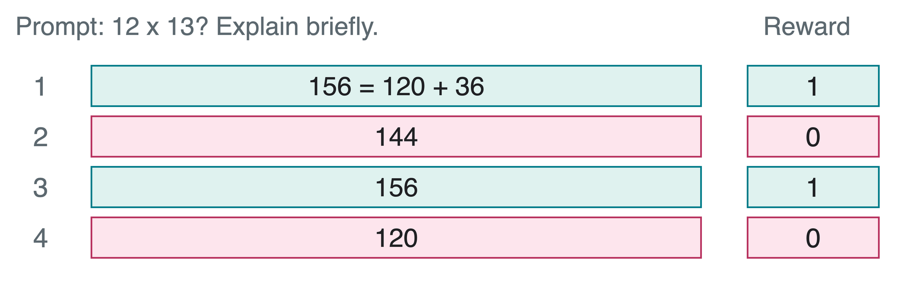

Proximal Policy Optimization (PPO) improves a policy using sampled experience. “Proximal” means nearby: the update objective discourages large changes from the policy that collected the data.

Recall: \pi_\theta(a\mid s) is action a’s probability in state s, with policy weights \theta. An advantage estimate\hat A compares its return with a state-value baseline.
The old policy\pi_{\text{old}} generated the current batch, a set of collected examples. Freeze it: hold its parameters fixed during updates to this batch.
PPO maximizes the average of these scores over collected examples. The advantage estimate stays fixed during this batch’s policy updates.
The minimum makes the objective conservative. The flat region depends on whether the advantage is positive or negative.
Positive Advantage: Pickup
Pickup has \hat A=+1.1. Its probability rises from 0.50 to 0.65, so \rho=1.30 lies above the upper band edge 1.2.

\ell=\min\{1.30\cdot1.1,\;1.20\cdot1.1\}=1.32.
Further increasing this ratio adds no benefit to this sample’s clipped score. The actual probability can still be 0.65; clipping does not force it to 0.60.
Negative Advantage: Small Job
The small job has \hat A=-1.1. Under the same candidate policy, its probability falls from 0.50 to 0.35, giving \rho=0.70.

\ell=\min\{0.70(-1.1),\;0.80(-1.1)\}=-0.88.
The minimum selects -0.88, not -0.77. Reducing this bad action’s probability further brings no extra benefit to this term. Making it more likely still worsens the score.
One PPO Training Round
A rollout is a sampled interaction sequence. An epoch is one pass through the collected batch; a minibatch is a smaller chunk used for one optimizer step.
The critic predicts state value V(s). For example, estimate advantage as discounted return minus V(s). ClipScore is \ell from the preceding slides.
Keep old, targets, and advantages fixed for these K passes. Then collect a new batch with the updated policy.
A Language Model as a Policy
A large language model (LLM) chooses text pieces called tokens. At each step, the state is the prompt plus text already generated, and the action is the next token.

Write q for the prompt and y for the completed response. Generating an answer is an episode ending when the response finishes.
A response-level score can train many token choices. Its source may be human preferences or an automatic correctness checker.
RLHF: Learning from Human Preferences
Reinforcement learning from human feedback (RLHF) uses human judgments to guide policy training. Here is the classic reward-model-and-PPO pipeline:

Supervised fine-tuning (SFT) continues an already trained model’s training on example answers. A reward model (RM) learns to score responses from human comparisons.
RLHF is a feedback-based training pipeline. PPO is one optimizer that can be used inside it.
Fitting the Reward Model
A preference pair has the same prompt q, a human-preferred answer y^+, and a rejected answer y^-. Let s_\phi(q,y) be the reward model’s scalar score, with weights \phi.
The sigmoid\sigma(z)=1/(1+e^{-z}) converts the score difference to a modeled preference probability. Here 2-0.5=1.5 gives \sigma(1.5)\approx0.818.
Rollout Snapshot and Reference Policy
The reference policy\pi_{\text{ref}} is a fixed SFT copy during this RLHF stage. It anchors behavior. The rollout snapshot\pi_{\text{old}} is refreshed when collecting each new PPO batch.

Kullback-Leibler (KL) divergence measures how one probability distribution differs from another. At a fixed text prefix, let P be the current token distribution and Q the reference:
Optimize preference reward while penalizing this departure. A coefficient \beta\geq0 controls penalty strength. KL is zero for equal distributions and is asymmetric.
An RLHF Training Round
Start from the SFT policy and initialize a trainable value critic. Keep the learned reward model and SFT reference fixed during this RL stage.
ShapeRewards adds the response score at the end and subtracts sampled reference-policy penalties at generated tokens. PPOUpdate performs a bounded number of passes over this batch.
Humans provide training comparisons. The fitted reward model can then score many RL rollouts without a new human judgment at every step.
Direct Preference Optimization
Direct Preference Optimization (DPO) trains the policy directly from chosen/rejected answer pairs, without fitting a separate reward model or running a PPO rollout loop.
Reuse prompt q, preferred answer y^+, and rejected answer y^-. Offline means the comparisons are saved before this training stage.
The preference margin is u_\theta^+-u_\theta^-. The chosen \beta>0 scales it; \sigma is the sigmoid. Minimize the average pair loss.
Toy probabilities for our preferred 156 explanation and rejected 144 answer:
Model
\pi(y^+\mid q)
\pi(y^-\mid q)
Fixed reference
0.20
0.20
Current policy
0.40
0.10
With \beta=1, the margin is \log 2-\log 0.5=\log 4. Thus the modeled preference probability is 0.8, and L_{\text{DPO}}=-\log 0.8\approx0.223.
The DPO Training Loop
Initialize the policy from SFT. Hold the reference fixed throughout this offline training stage.
policy=Copy(SFT)
reference=FrozenCopy(SFT)
for each minibatch (q, yPlus, yMinus) of saved preferences
uPlus=ResponseLogRatio(policy, reference, q, yPlus)
uMinus=ResponseLogRatio(policy, reference, q, yMinus)
loss=-mean(log(sigmoid(beta* (uPlus-uMinus))))
OptimizerStep(policy, loss)
ResponseLogRatio returns u_\theta^\pm from the preceding slide. Score the saved answer tokens, conditioned on the prompt and their earlier tokens. Sum their log-probabilities for each complete answer, rather than sampling a new answer.
Only the policy is trained here. There is no separate reward-model training, value critic, or online rollout collection in this loop.
Group Relative Policy Optimization
Group Relative Policy Optimization (GRPO) estimates learning weights from a group of G responses to the same prompt, instead of training a separate value critic.

Here G=4. A verifier, an automatic checker, gives 1 for final answer 156 and 0 otherwise. This example uses checked correctness rather than human preference scores.
Use the same response weight \hat A_i for its tokens in this final-reward example. Average the PPO-style scores \ell(\rho_{i,t},\hat A_i) within each response, then across the group.
For a token in a response with \hat A_i=1, changing its probability from 0.50 to 0.65 gives \rho=1.3 and clipped score 1.2.
Clipping uses one ratio per generated token. The original GRPO objective adds a reference-policy KL penalty separately from the group-normalized reward.
One GRPO Training Round
Fix a reference policy and a scoring rule for this stage. Score each response with a verifier or a frozen learned reward model.
old=FrozenCopy(policy)
groups=GenerateGroups(old, prompts, G)
rewards=ScoreResponses(groups)
A=NormalizeOrZero(rewards) // separately per prompt
forK update passes
ratio=TokenRatios(policy, old, groups)
gain=MeanByResponse(ClipScore(ratio, A))
penalty=ReferenceKL(policy, reference, groups)
loss=-mean(gain) +beta*penalty
OptimizerStep(policy, loss)
MeanByResponse averages token scores within each answer. Keep the old probabilities and group weights fixed across the K passes. Only the policy is trained here.
Training Loops and Reward Sources
Method
Data for the policy update
Value critic
Separate reward model
Classic RLHF with PPO
Fresh responses scored by the reward model
Trained
Yes
GRPO
Fresh response groups; verifier or learned scores
None
Optional
Offline DPO
Saved chosen/rejected answer pairs
None
None
A reward model scores response quality. A critic predicts expected return. Removing the critic does not automatically remove the reward model or reference policy.
Human preferences can train either PPO-based RLHF or DPO. GRPO with a purely automatic verifier is not, by itself, human-feedback learning.
Reward Quality Still Matters
Prompt: “What is 12\times13? Explain briefly.”
Response
Correct?
Explanation?
Verifier reward
12\times10+12\times3=156
Yes
Yes
1
156
Yes
No
1
The checker rewards both equally because it tests only the final answer.
Reward hacking means exploiting a scoring rule while missing the intended goal. A learned preference scorer can also miss important aspects of quality.
Evaluate on held-out tasks, tasks not used in training, and check the behavior humans actually wanted. A rising training reward alone is insufficient evidence.
Quick Check
If \pi_{\text{old}}(a\mid s)=0.5 and the candidate gives 0.7, does PPO clipping force the probability back to 0.6 when \epsilon=0.2?
Does “GRPO has no value critic” imply it needs no reward model?
What if a group receives rewards (1,1,1,1)?
1. No. The ratio is 1.4. Clipping changes the score’s incentive, not the actual probability directly.
2. No. The scorer may still be a learned reward model, or it may be an automatic verifier.
3. All relative weights are zero under our guard. The reward component has no group contrast; a separate KL penalty may still act.
Takeaways
PPO-Clip limits incentives for large favorable ratio changes, without a hard policy-distance guarantee.
The old policy supplies fixed denominators for a recent batch.
Classic RLHF fits a preference reward model, then improves a policy using it.
DPO directly fits saved preference pairs using a reference-relative loss, without a separate reward model or RL rollout loop.
Rollout snapshots, fixed references, reward models, and value critics have different roles.
GRPO replaces the learned value baseline with group-relative reward weights.
Equal-score groups and incomplete reward specifications need explicit handling.